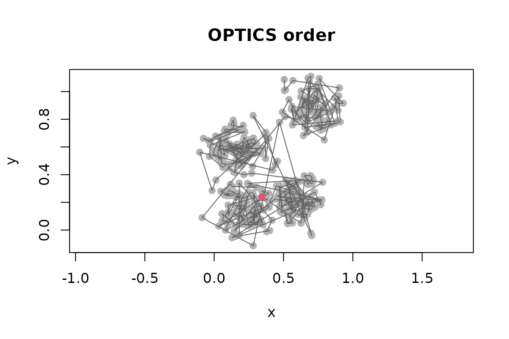
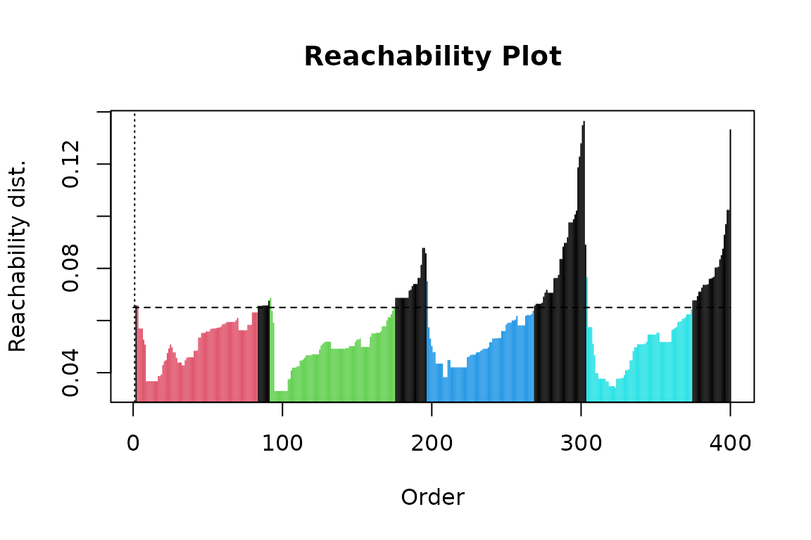
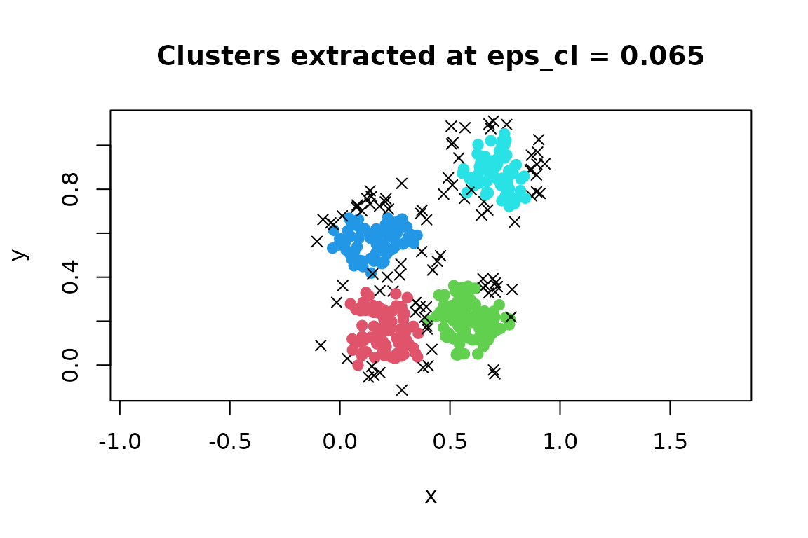
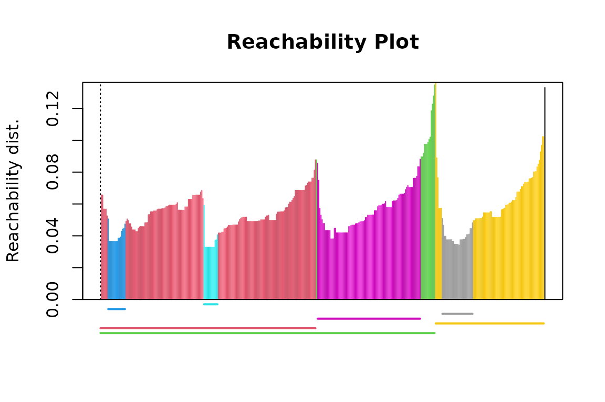
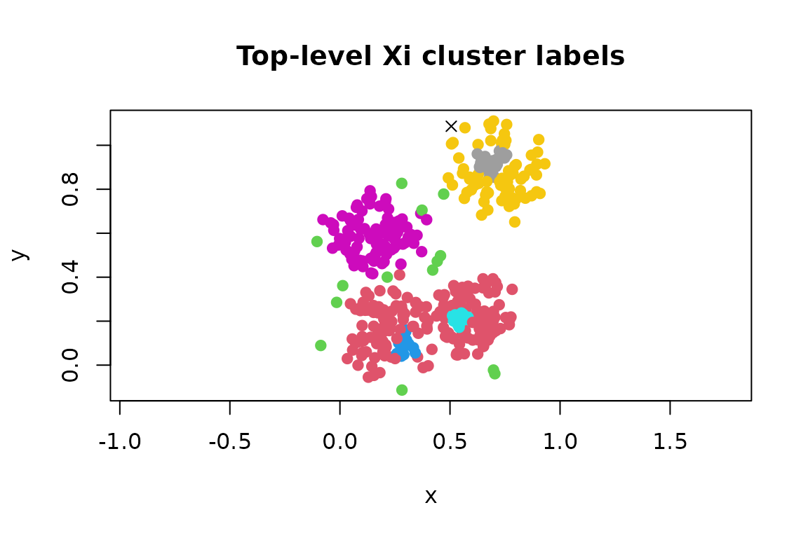

Ordering Points With OPTICS
Michael Hahsler, Matthew Piekenbrock
Source:vignettes/optics.Rmd
optics.RmdOPTICS (Ordering Points To Identify the Clustering Structure) is a density-based ordering algorithm. Like DBSCAN, it describes dense regions in terms of an epsilon neighborhood and a minimum number of points. Unlike DBSCAN, its main result is not a single clustering. OPTICS orders observations and records their reachability distances, revealing clustering structure over a range of density levels.
This vignette shows how to create and interpret an OPTICS ordering and how to extract flat or hierarchical clusters from it.
Create an OPTICS ordering
We generate four compact groups for a small reproducible example.
set.seed(2)
n <- 400
x <- cbind(
x = runif(4, 0, 1) + rnorm(n, sd = 0.1),
y = runif(4, 0, 1) + rnorm(n, sd = 0.1)
)
plot(x, pch = 19, asp = 1, main = "Example data")optics() accepts a numeric matrix or data frame. For
numeric data it uses Euclidean distance and a fast kd-tree search.
opt <- optics(x, minPts = 10)
opt
#> OPTICS ordering/clustering for 400 objects.
#> Parameters: minPts = 10, eps = 0.192510979570566, eps_cl = NA, xi = NA
#> Available fields: order, reachdist, coredist, predecessor, minPts, eps,
#> eps_cl, xiThe most important result components are:
-
order: row numbers of the observations in OPTICS order; -
reachdist: each observation’s reachability distance; and -
coredist: each observation’s core distance.
The distance vectors use the original row order. For example, reachability distances in OPTICS order are obtained with:
head(opt$order, 10)
#> [1] 1 363 209 349 337 301 357 333 321 285
head(opt$reachdist[opt$order], 10)
#> [1] Inf 0.06559013 0.06559013 0.05673844 0.05673844 0.05673844
#> [7] 0.05246930 0.05056201 0.03653219 0.03653219The first reachability distance is undefined because the first point
has no predecessor. It is stored as Inf.
Read the reachability plot
Plotting an OPTICS object produces a reachability plot. Each vertical bar is one observation, arranged in OPTICS order rather than input order.
plot(opt)Low-reachability valleys represent dense groups. Peaks separate groups, and deeper valleys represent denser structure. The plot is therefore best read as a density landscape, not as a scatter plot or a sequence in the original data.
The ordering can also be displayed in the original coordinate space. This is mainly useful for understanding the algorithm; the reachability plot is usually clearer for real data.
plot(x, col = "grey70", pch = 19, asp = 1, main = "OPTICS order")
lines(x[opt$order, ], col = "grey40")
points(x[opt$order[1], , drop = FALSE], pch = 19, col = 2)
Choose minPts and eps
minPts controls the scale at which density is evaluated.
It includes the point itself, so minPts = 10 uses the
distance to the ninth other nearest neighbor for the core-distance
calculation. Larger values average over larger neighborhoods and
generally produce a smoother reachability plot; smaller values reveal
finer structure but are more sensitive to local variation.
In OPTICS, eps is the maximum neighborhood radius
explored by the algorithm. It is primarily a computational upper bound,
not usually the density threshold used to define the final clusters. The
default eps = Inf lets the package estimate a sufficient
finite radius from the data and minPts.
For large data sets, supplying a smaller upper bound can reduce
computation, but it must not exclude structure of interest. Multiple
dashed bars in the reachability plot indicate undefined distances and
usually mean that eps is too small. The first dashed bar is
expected.
As with other distance-based methods, variable scales matter. Standardize variables when their units are not comparable and scaling is substantively appropriate.
Extract a DBSCAN-like clustering
extractDBSCAN() cuts the reachability plot at a global
threshold eps_cl. This does not rerun OPTICS, so several
thresholds can be explored using the same ordering. The extraction
closely resembles DBSCAN with the same minPts and epsilon,
although OPTICS can leave some DBSCAN border points unassigned.
opt_db <- extractDBSCAN(opt, eps_cl = 0.065)
opt_db
#> OPTICS ordering/clustering for 400 objects.
#> Parameters: minPts = 10, eps = 0.192510979570566, eps_cl = 0.065, xi = NA
#> The clustering contains 4 cluster(s) and 92 noise points.
#>
#> 0 1 2 3 4
#> 92 81 84 72 71
#>
#> Available fields: order, reachdist, coredist, predecessor, minPts, eps,
#> eps_cl, xi, cluster
plot(opt_db)
The dashed horizontal line is the extraction threshold. Bars are
colored by cluster; cluster 0 is noise and appears black
with the default palette. Cluster assignments are stored in original
data order.
table(opt_db$cluster)
#>
#> 0 1 2 3 4
#> 92 81 84 72 71
plot(
x,
col = opt_db$cluster + 1L,
pch = ifelse(opt_db$cluster == 0, 4, 19),
asp = 1,
main = "Clusters extracted at eps_cl = 0.065"
)
Changing the cut illustrates structure at a different density level:
opt_db_wide <- extractDBSCAN(opt, eps_cl = 0.07)
c(
clusters = max(opt_db_wide$cluster),
noise = sum(opt_db_wide$cluster == 0)
)
#> clusters noise
#> 3 62Choose eps_cl <= opt$eps. A useful threshold crosses
stable valleys below the peaks that separate them. If a single global
cut cannot represent groups of differing density, use the Xi extraction
described next.
Extract clusters with the Xi method
extractXi() identifies relative steep-down and steep-up
regions in the reachability plot. The xi value is the
minimum relative change in reachability used to recognize a boundary.
This can find nested clusters and clusters at different density levels
without selecting one global distance threshold.
opt_xi <- extractXi(opt, xi = 0.05)
opt_xi
#> OPTICS ordering/clustering for 400 objects.
#> Parameters: minPts = 10, eps = 0.192510979570566, eps_cl = NA, xi = 0.05
#> The clustering contains 7 cluster(s) and 1 noise points.
#>
#> Available fields: order, reachdist, coredist, predecessor, minPts, eps,
#> eps_cl, xi, clusters_xi, cluster
opt_xi$clusters_xi
#> start end cluster_id
#> 1 1 194 1
#> 2 1 301 2
#> 3 8 23 3
#> 4 94 106 4
#> 5 196 288 5
#> 6 302 399 6
#> 7 308 335 7
plot(opt_xi)
Each row of clusters_xi gives the start and end
positions of a cluster in OPTICS order. These intervals can be nested.
The colored line segments below the reachability plot show the
intervals, while cluster contains a convenient non-nested
labeling in original data order for plotting.
plot(
x,
col = opt_xi$cluster + 1L,
pch = ifelse(opt_xi$cluster == 0, 4, 19),
asp = 1,
main = "Top-level Xi cluster labels"
)
Set minimum = TRUE to retain minimal clusters that do
not contain other Xi clusters. This is useful when a non-overlapping,
fine-grained solution is needed.
opt_xi_min <- extractXi(opt, xi = 0.05, minimum = TRUE)
opt_xi_min
#> OPTICS ordering/clustering for 400 objects.
#> Parameters: minPts = 10, eps = 0.192510979570566, eps_cl = NA, xi = 0.05
#> The clustering contains 4 cluster(s) and 250 noise points.
#>
#> Available fields: order, reachdist, coredist, predecessor, minPts, eps,
#> eps_cl, xi, clusters_xi, clusterThe predecessor correction is enabled by default and removes a known artifact of the original Xi extraction procedure. It should normally remain enabled.
Convert the ordering to a dendrogram
An OPTICS reachability structure can be represented as a dendrogram. This is often convenient for smaller data sets or for code that works with standard R dendrogram objects.
dend <- as.dendrogram(opt)
plot(dend, leaflab = "none", ylab = "Reachability distance")Conversion requires a complete reachability structure. If OPTICS was
run with an eps that is too small, rerun it with a larger
value or the default before converting.
Predict labels for new observations
Prediction is available only after extractDBSCAN(),
because prediction needs a flat clustering and its global
eps_cl threshold. Supply the original training data along
with the new observations.
new_points <- rbind(
c(0.2, 0.3),
c(0.8, 0.8),
c(2.0, 2.0)
)
predict(opt_db, newdata = new_points, data = x)
#> [1] 1 4 0A new observation receives the label of its nearest non-noise
training point within eps_cl; otherwise it is labeled
0. Apply the same transformations used for the training
data to new observations.
Use another distance measure
To use a distance other than Euclidean distance, calculate a
dist object and pass it to optics(). This uses
the supplied pairwise distances rather than the kd-tree search.
Prediction from a precomputed-distance analysis is not generally
available, because distances from new observations to the training data
are not stored in the dist object.
References
Ankerst, M., Breunig, M. M., Kriegel, H.-P., and Sander, J. (1999). OPTICS: Ordering Points To Identify the Clustering Structure. Proceedings of the 1999 ACM SIGMOD International Conference on Management of Data, 49–60. doi:10.1145/304181.304187.
Schubert, E. and Gertz, M. (2018). Improving the Cluster Structure Extracted from OPTICS Plots. Lernen, Wissen, Daten, Analysen (LWDA 2018), 318–329.
Hahsler, M., Piekenbrock, M., and Doran, D. (2019). dbscan: Fast Density-Based Clustering with R. Journal of Statistical Software, 91(1), 1–30. doi:10.18637/jss.v091.i01.